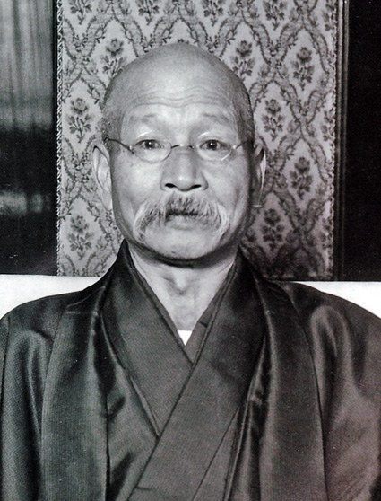

Kenneth M Shima, “‘Your Spirit in Every Shard, One Nation in Every Mind’: Antiques, Materiality, and Narrating the National Self in Late 19th C. Japan”

University of California Los Angeles
Dept. of Asian Languages and Cultures PhD. Student
Kenneth M. Shima
Saturday, September 28, 2013
Kenneth M Shima, “‘Your Spirit in Every Shard, One Nation in Every Mind’: Antiques, Materiality, and Narrating the National Self in Late 19th C. Japan”
The purpose of this paper is to examine the ‘antique,’ kottÅ, or gÇ”dÇ’ng [骨董] in the context of modern Asian cultural practices and empire—to historicize as object and concept this materialization of historical knowledge—as a commodity of temporality, and as an conduit between a speculative past and a phenomenal present. Focusing on the Tokyo-based Antiques Association Magazine [骨董å”会雑誌] published in the late 1890s, I examine how collecting the past held new implications for curating an Imperial present specifically with regard to Taiwan. Editor Miyatake Gaikotsu launched this publication with an understanding of the past that would not only suture gaps in (national) history, but also recover the mutable humanism that the practice of antiques drew from late Ming-dynasty aesthetics. He writes, “..while the way of loving the past not only supplements the omissions in history and allows us to sense the noble manners of the ancients, does it not also provide the way to advance the knowledge of the citizens and to raise the elegance of the state?”
I argue that the category of the antique in the late-19th to early-20th centuries reveals certain changes to the alignment of everyday human experience to a particular form of imperial pedagogy via the material remnants of the past. Foremost, I seek to illuminate the power of how ‘the ancient,’ in the tangible form of agedness and material endurance, acquired critical significance on a subjective and inter-human level—while at the same time problematizing a tension in existing scholarship of state over collaborative obsession with the past; a tendency that privileges official practices of museums and archives to see a top-down power structure creating modern consciousness and national-historical identities. Instead of accounting for the aesthetic and emotional systems that antiques evoke both on the micro- and macro-level of society, the state-centric analytic framework relies primarily upon curatorial practices furnished through imperialistic accumulation (plunder, archeology, etc.) that inversely fashions domestic national self-narrativization. This can occur without addressing the very real relationships of exchange, and legal relationships that commoditize nostalgia and structure of the self through the material past across transnational and transcultural boundaries.